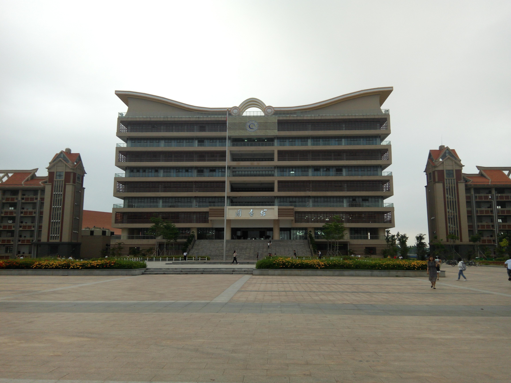

"海涵春育，鹏举南天"
一、 钦州学院大学精神典故
"海涵春育"典出：《艺文类聚卷四六》所引 南朝 梁 王僧孺 《为临川王让太尉表》："陛下海涵春育，日镜云伸，追大道之无私"；此外"海涵"又见 宋 苏轼 《湖州谢上表》："此盖伏遇皇帝陛下，天覆羣生，海涵万族"。"鹏举"见曹植 《玄畅赋》："希鹏举以抟天，蹶青云而奋羽"。"南天"指南方。有时特指岭南地区。唐 李颀 《送卢少府赴延陵》诗：" 北固波涛险，南天风俗殊。" 金 周昂 《北行》诗："北塞甘长别，南天欲远征。"
二、钦州学院大学精神释义
"海涵"，面大海，临浩瀚，以海之气象涵养之也。详解其义有三：一曰大学地理，位于钦州；二曰特色学科，海洋类学科；三曰大学理念，开发北部湾。"春育"，春风化育，谓大学以育人为本，且以春风化育之道育一代新人。"鹏举"，大鹏振羽，其翼垂天也。谓大学之发展前程无量，亦谓以大学之发展，来发展钦州，发展北部湾，辐射东南亚亦为前程无量之伟业也。"南天"本谓大学所在南方。因其本意有有时特指岭南地区之义，故大学之服务，生源，学术资源俱在南天也。此大学精神突出学校位于良港，辐射东南亚，以育人，海洋气象为特色。